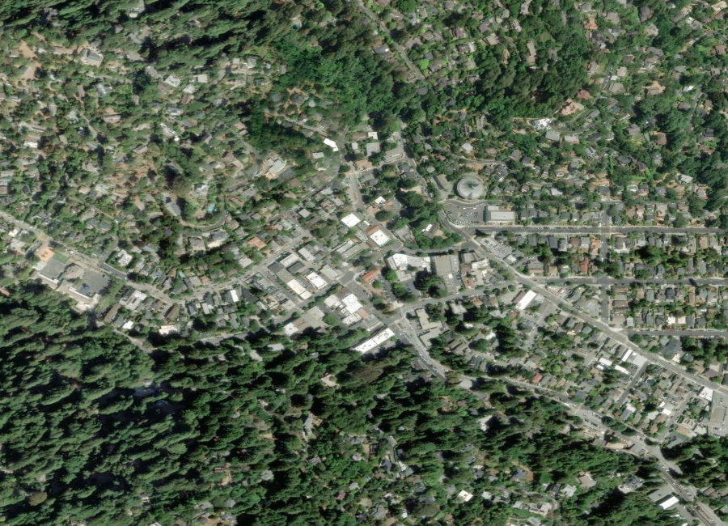
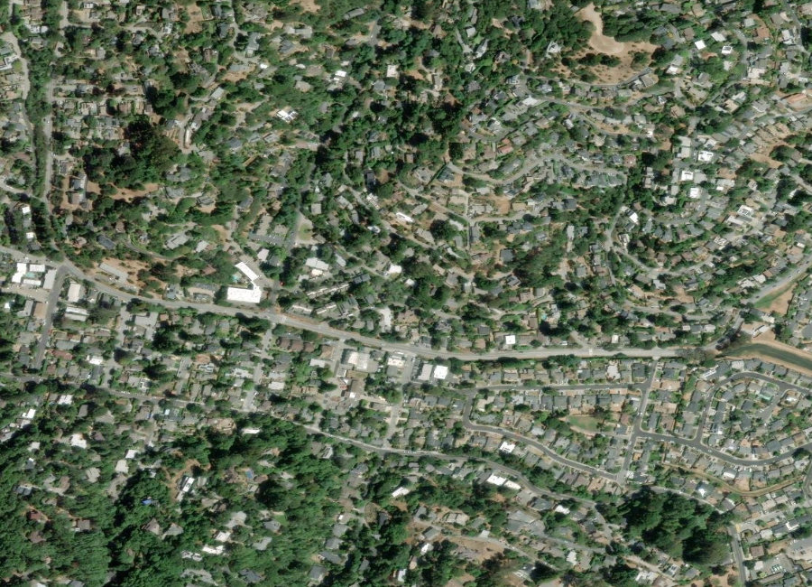
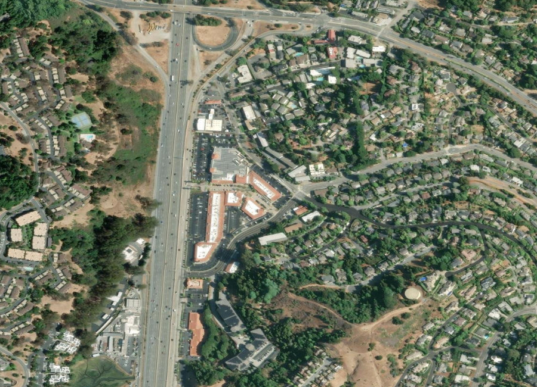

Marin County · Mount Tamalpais
Named for the 19th-century sawmill that once stood here, Mill Valley is really five micro-markets in one town — downtown craftsman cottages, Homestead Valley's hillside redwoods, and waterfront Strawberry all price very differently. Below you'll find current homes for sale and real estate listings in Mill Valley, updated throughout the day, whether you're buying your first Marin home or preparing to sell into today's competitive market.
If you'd like more information on any of these Mill Valley listings, just reach out — we're happy to share disclosures, recent nearby sales, and pricing history, and to walk you through anything you're curious about.
And for your convenience, feel free to register for a free account to receive alerts whenever new Mill Valley listings hit the market that match your criteria.
Source: Compass Market Insights, single-family homes in Mill Valley, July 2026 — 20 closed sales. Updated 20 August 2026. With only ~15 sales a month across five distinct sub-markets, this citywide median can swing significantly depending on which neighborhood traded.
About the Community
Mill Valley grew up around a 19th-century sawmill on the eastern slopes of Mount Tamalpais, incorporating in 1900 to gain local control from the land company that had been managing development. Today it's known for redwood-filled canyons, the Mill Valley Film Festival, and the Dipsea Race — the oldest trail race in America, run continuously since 1905.
Why People Love It Here
Explore the Area

Walkable, historic cottages

Wooded, hillside, artistic

Waterfront, Tiburon-adjacent
Relative value, Tam High access
Schools
Mill Valley is served by the Mill Valley School District (K–8) and Tamalpais Union High School District, alongside several respected independent schools.
History
Mill Valley takes its name from a 19th-century sawmill that processed timber harvested from the surrounding redwood canyons. As accessible lumber diminished, the area shifted toward residential use, and on August 25, 1900, residents voted 99 to 63 to incorporate, seeking local control from the Tamalpais Land and Water Company, which had been managing the area's development.
After the 1906 San Francisco earthquake, many San Franciscans relocated to Mill Valley, and the completion of the Golden Gate Bridge in 1937 further boosted its growth as an accessible, sought-after suburb.
The Chen Team in Mill Valley
We've helped families buy and sell across Mill Valley's most sought-after streets. When you work with us, you get second-generation local knowledge and Compass's full resources.
// Replace with your verified production figures
Market Trends
Quarterly median sold price, single-family homes. Bars are drawn to scale from zero. Year-over-year compares Q2 2026 (113 closed sales) with Q2 2025 (95). Connect to live market data. Note: five distinct sub-markets mean citywide figures should be paired with a neighborhood-level comp.
Available Now
Image credits: Summit of Mount Tamalpais, near Mill Valley, California.JPG by Cheers. Trance addict - Armin van Buuren - Oceanlab — CC BY-SA 3.0, via Wikimedia Commons; Entrance of Muir Woods, Panoramic, Mill Valley, California (March 2011).jpg by Jason Toff — CC BY 2.0, via Wikimedia Commons.
{kind=link}
.jpg){kind=link}